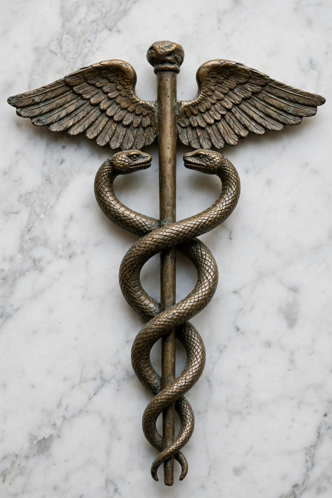

The caduceus (Latin caduceus, from Greek kērykeion, herald's wand) is a staff carried by Hermes in Greek mythology and Hermes Trismegistus in Greco-Egyptian tradition: a short staff entwined by two serpents, sometimes surmounted by wings.

Similar serpent-staff imagery appears in ancient Mesopotamia and India. In Greek myth Hermes used the wand to put mortals to sleep or wake them, guide the dead, and protect merchants, thieves and heralds; by extension it symbolised commerce, eloquence, trickery and safe conduct.
Especially in North America the caduceus is widely used as a symbol of medicine and healthcare, although the historically correct medical emblem is the Rod of Asclepius, with a single serpent and no wings. Surveys have found commercial healthcare organisations favour the caduceus while professional medical bodies more often use Asclepius's rod. See Hermes and Rod of Asclepius.